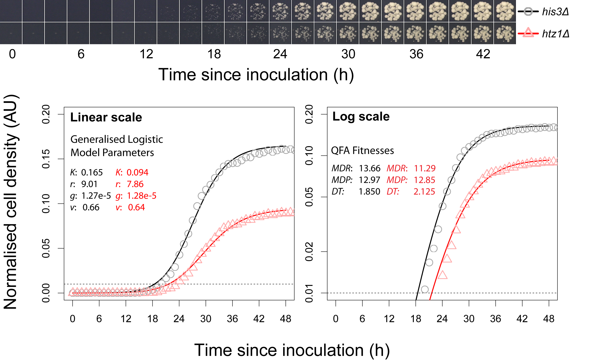

Installation
This R package is available for download for several operating systems from R-forge at this address: http://r-forge.r-project.org/projects/qfa
The easiest way to install the package is to execute the following command during an R session:
install.packages("qfa", repos="http://R-Forge.R-project.org")
Note that the latest version of R is required for easy, automatic installation. Source code can be used to build the package for older versions of R if required and can be checked out from R-forge by subversion.
Once installed, the package can be loaded ready for use with:
library(qfa)
Detailed documentation can be found in the package manual here or by executing:
help(package="qfa")
Documentation for specific functions can also be obtained using the usual R mechanisms. For example, help on the function colonyzer.read can be obtained with:
?colonyzer.read
A short document outlining QFA and the package functions can be accessed here by:
vignette("qfa")
Finally, some code demonstrating analysis of a small subset of the data presented in Addinall et al., 2011 can be executed by:
demo("telomereCap")
Quantitative Fitness Analysis
During Quantitative Fitness Analysis (QFA) we generate cell density timecourse estimates by repeatedly photographing microbial cultures growing in regular arrays on solid agar plates. First, we quantify cell density from timecourse photographs using the image analysis tool Colonyzer (Lawless et al., 2010). Next, we fit a generalised logistic model to the cell density timecourse for each independently growing culture, using the inferred model parameters to define a quantitative measure of culture fitness. Comparisons between fitnesses can be extremely useful for comparing the health of cultures and deducing the relative effect of their genotypes in a specific environment. This package is for fitting logistic models to cell density timeseries, generating fitness estimates, quantifying (e.g. genetic) interactions, data quality control and data visualisation.

The equipment for genome-wide QFA is expensive since QFA at this scale requires significant robotic assistance, however the high-throughput screening facility at Newcastle University offers QFA as a service.
Example Applications
By carrying out QFA on arrayed microbial cultures containing relevant gene mutations, we can use fitness estimates to infer the presence or absence of epistasis, and to quantify and rank genetic interaction strengths. For example, during screens for gene deletions interacting with telomere capping mutations, Addinall et al., 2011 inferred genetic interaction strength as the deviation of observed double mutant fitnesses from predicted double mutant fitnesses given observed single deletion fitnesses and assuming a multiplicative model of epistasis. They also calculate the statistical significance of deviations given noise in experimental observations.
If arrayed cultures are grown at selected temperatures we can infer the temperature sensitivity of mutants by QFA. Addinall et al., 2011 demonstrated the use of QFA to identify gene deletions resulting in increased temperature sensitivity. These results were verified by comparison with manually curated observations listed in the Saccharomyces Genome Database (SGD). If cultures are subject to treatments (e.g. nutrition, or drug treatments) QFA can generate ranked lists of cultures which grow surprisingly well or badly given the particular treatment.
The supplementary data website for Addinall et al., 2011 contains large, genome-wide datasets suitable for analysis with this package.
Workflow
This R package is a toolbox for carrying many of the the mathematical & statistical aspects of the QFA workflow. Analysis is preceded by two stages, one experimental stage and one image analysis stage.
The first stage of QFA requires the generation of arrays of cultures of interest. This can be carried out in a high-throughput fashion, using libraries of gene mutations (as was done in Addinall et al., 2011), however it can also be carried out in a lower-throughput fashion, with hand selected and hand inoculated cultures, growing on a single plate for example. Once cultures are generated, diluted and inoculated onto agar, they must be repeatedly photographed. There are custom, semi-automatic and fully-automatic technologies available to facilitate timecourse photography of such plates (e.g. S&P Robotics SPImager, or a custom-built alternative), however any lab should be able to capture such timecourses by fixing a consumer digital camera over a plate, and repeatedly capturing images to a computer hard-drive via USB cable. It is important to record the time at which the photographs were captured, and this is achieved most simply by embedding the current date and time into the captured image filenames.
The second stage is image analysis to convert culture photographs into cell density estimates. This is usually achieved using the the Colonyzer software (Lawless et al., 2010). However the output of any image analysis tool capable of generating culture size estimates from images of rectangular arrayed cultures could be reformatted and incorporated into the QFA workflow. Colonyzer is a suite of particularly sensitive image analysis algorithms, capable of detecting signal on spotted agar plates early in the growth curve. It has been designed to eliminate lighting gradients in captured images, thereby minimising spatial bias in cell density estimates without having to use expensive, carefully optimised lighting systems.
Given cell density estimates from Colonyzer and an appropriate experimental description specifiying the genotype or ID of each culture on each plate, the treatments applied, and the time of inoculation for each plate, the qfa R package contains everything needed to generate growth curves and quantitiative fitness estimates for all cultures, together with estimates of genetic interaction strengths (for appropriately designed experiments).
Journal of Visualised Experiments QFA video
A short video describing the experimental and computational components of QFA. There is also an open-access manuscript with a detailed description of the QFA protocol associated with this video.
R package functions overview
This R package consists of a set of functions, split into types below:
Reading and formatting data
These functions read in image analysis output (e.g. from Colonyzer), associate these cell density estimates with culture type (e.g. genotype) & plate treatments and calculate time since inoculation for each observation. All of these data are bound together into a data.frame object, with rows representing unique observations of individual cultures.
Fitting logistic model to growth curves
These functions carry out parameter inference for a generalised logistic model of the observed growth curves. Inference is currently carried out by maximum likelihood (fast, only provides point estimates for parameter values), however we are currently developing a parallel package (qfaBayes) for Bayesian hierarchical inference which will provide distributed parameter estimates, making more efficient use of the available experimental observations. Logistic model parameter values can be used to construct quantitative fitness definitions for subsequent analysis.
Inferring genetic interaction strengths
Addinall et al., 2011 present statistical methods for inferring genetic interaction with telomere capping mutations. The analysis was based on comparing observervations of double mutant fitnesses with predicted double mutant fitnesses given observed single deletion fitnesses and assuming a multiplicative model of genetic interaction. Effectively, genome-wide observations are used to construct a linear predictor of query mutation fitness given control mutation fitness, and any deviations from this prediction are evidence for genetic interaction. Observations of multiple replicate cultures are typically made and these replicates can be summarised by mean or median fitness, and significance of deviations can correspondingly be estimated by Student's t-test or the Mann-Whitney test, corrected for multiple comparisons. Analysis based on mean/t-test is generally prefrable to that using median/Mann-Whitney test, since the former has greater statistical power, however, in the case where it has not been possible to perform adequate quality control on the source data (e.g. there are occasional contaminants, or missing cultures, resulting in statistical outliers) the former may be preferable.
Auxiliary functions
Together with the functions for carrying out the raw analysis above, we provide several functions for visualising the data, the fit of the logistic model to the data and the visualisation of evidence for epistatic interaction. These visualisation tools are important for understanding unexpected fitness patterns, tracking bugs and increasing user confidence in the validity of the sophisticated QFA workflows.